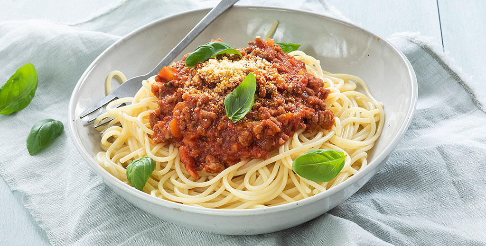

Spaghetti bolognese

Intro
Makkelijk recept voor de lekkerste pasta bolognese met een smaakvolle saus op basis van gehakt, zonder pakjes en zakjes!
ingredienten
- Spaghetti
- tomaat
- gehakt
- Laurier
bereiding
Bak de spekjes in een droge koekenpan totdat het meeste vocht en vet verdwenen is. Snipper de ui en hak de wortels in blokjes en voeg toe aan het spek. Voeg het gehakt toe en bak dit rul. Doe daarna de tomatenpuree er bij en bak 2 minuutjes mee.
Los het bouillonblokje op in 100 ml kokend water. Voeg de bouillon samen met de tomatenblokjes toe aan de pan. Breng de saus op smaak met oregano en eventueel een snufje peper en zout. Laat de bolognesesaus ca. 20 tot 25 minuten pruttelen tot hij mooi is ingedikt. Heb je niet zo veel tijd, gebruik dan een beetje allesbinder of maizena om de saus sneller te laten binden.
Kook ondertussen de spaghetti gaar. Serveer de pasta met de bolognesesaus op een bord. Garneer de spaghetti bolognese met wat verse basilicum en Parmezaanse kaas.